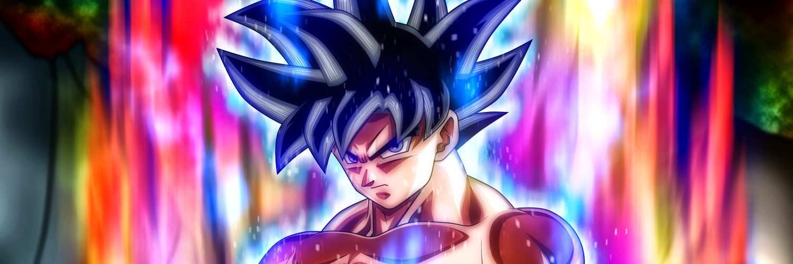

Goku's nieuwe transformatie uitgelegd
As the raging life force of the Spirit Bomb entered Goku, something in him changed, something inside of him broke free, and he awakened Ultra Instinct, the concept of subconscious body movement or the body being able to move on its own. It is something even Gods of Destruction struggles to learn or master, concepts quite close to this is discussed by even real world martial artists, Whis hinted this in one of the training sessions, and the likes of Beerus uses it to some extent or the other. This is a concept where the body moves on its own taking ones reflex, reaction time to a level unimaginable before. It’s like the body moving faster than you could think, the body acting without having to rely on the mind. Bron